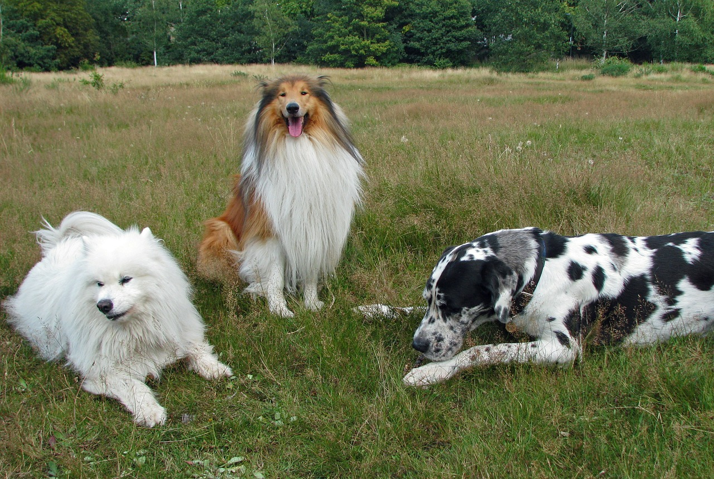

- Return
History
The Durham House of Pets was founded in 1997 by the two Morris brothers, Brett and Ryan. In their firsrt year,
their primary focus of the company was doog food. The dog food was called The Best. Selling The Best earned them instant sales and growth which allowed
for them to grow the company into what it is today.
Why us us
The Durham House of Pets has the best and most affordable products for your favorite pets.
Treat you pets how they would treat you. We care about the health of all pets that enter each store
and will get them the right products to live a happy heathly life.
